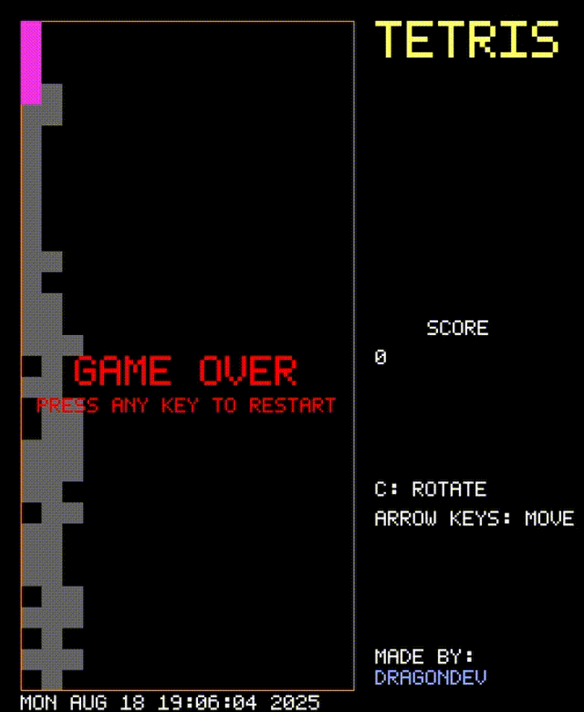
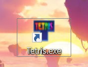

Tetris
This project is a modern implementation of the classic Tetris game, written entirely in C.
The program features:
- Gameplay logic: Blocks (tetrominoes) are randomly generated and fall down a 16x32 grid. The player can move and rotate them to complete lines. Completed lines are cleared, and the score increases.

- Bitmask-based tetrominoes: Each tetromino shape is defined with bitmasks, making rotations and collisions efficient to handle.


- Graphical rendering: The game is fully rendered using the SDL3 library, with smooth updates for falling blocks, cleared lines, and score display.
- Audio feedback: Thanks to the miniaudio library, the game includes background music, future plans about adding sound effects are being taken into account.
- Polished presentation: The game has an icon and title set for the window and executable, along with an introductory screen and proper game-over handling.

Controls:
- Arrow Keys: Move tetrominoes
- C: Rotate clockwise the tetromino
- SPACEBAR:Pause the game
- ESC: Quit the game
Status: Released
Tech stack: C, SDL3, miniaudio
Showcase:
← Back to Portfolio